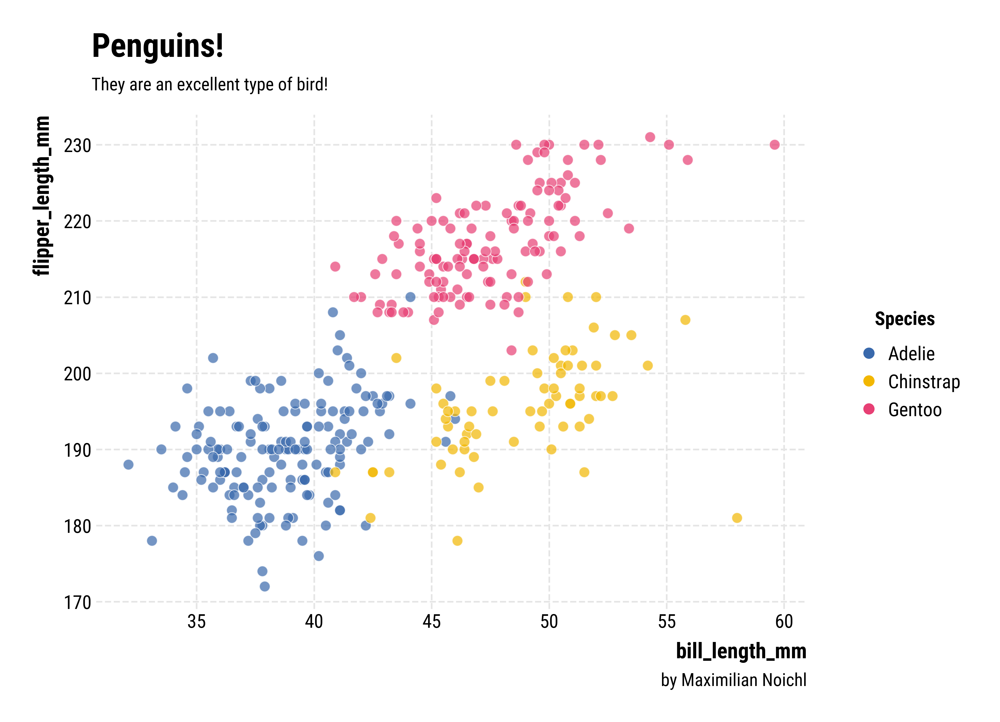
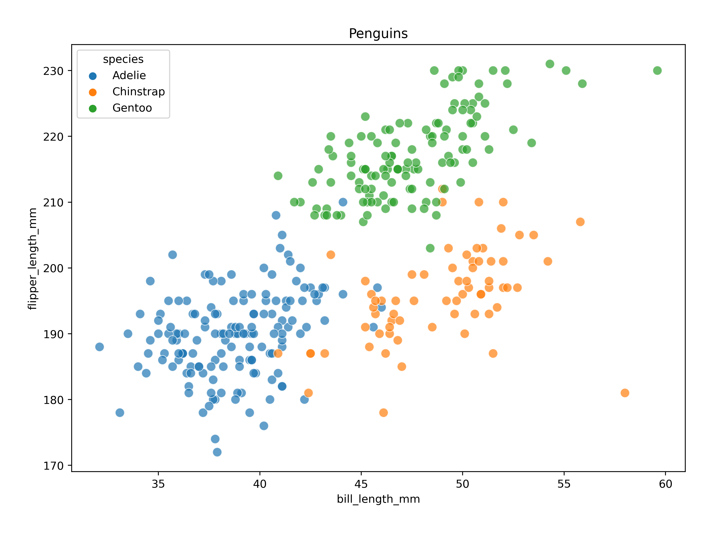
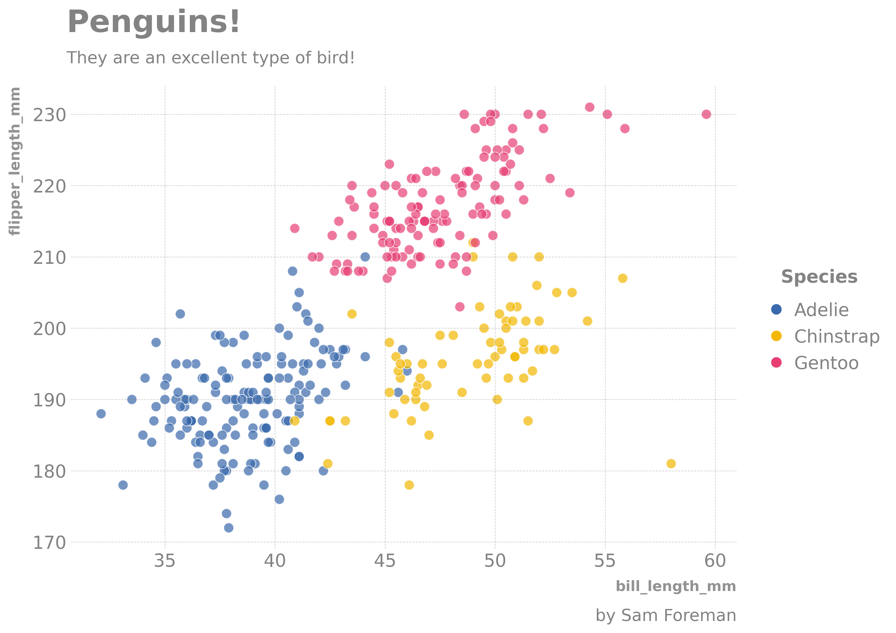
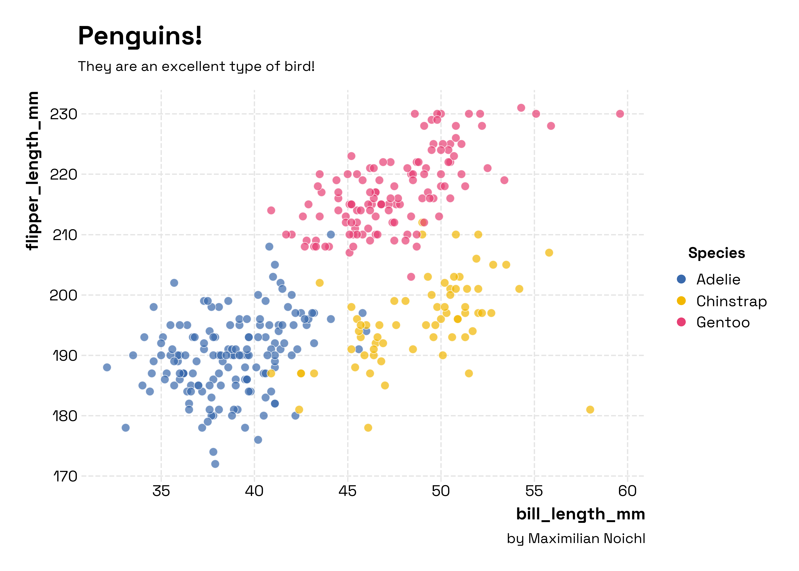
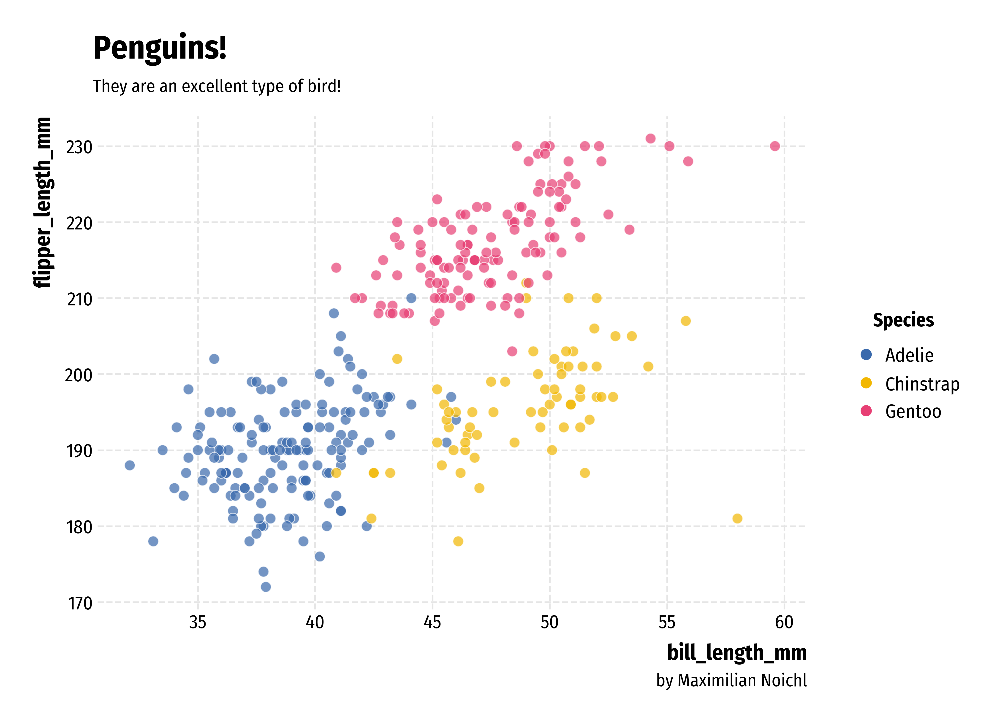
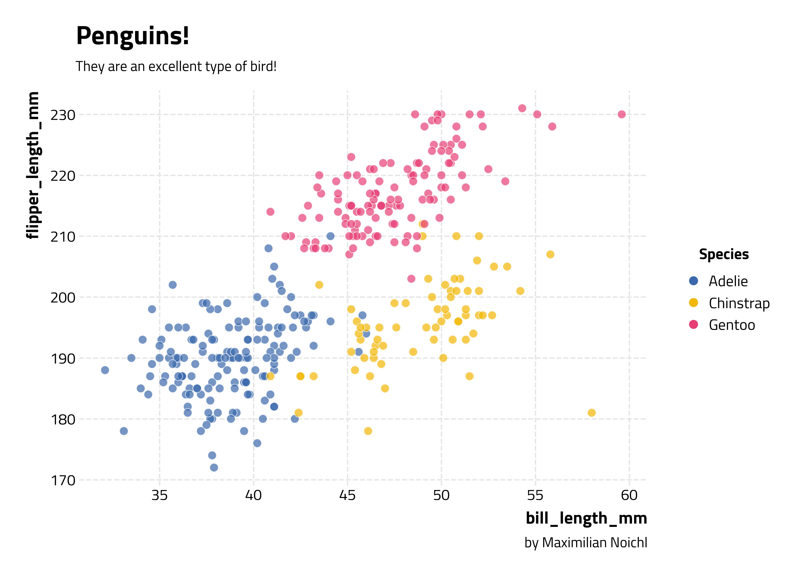
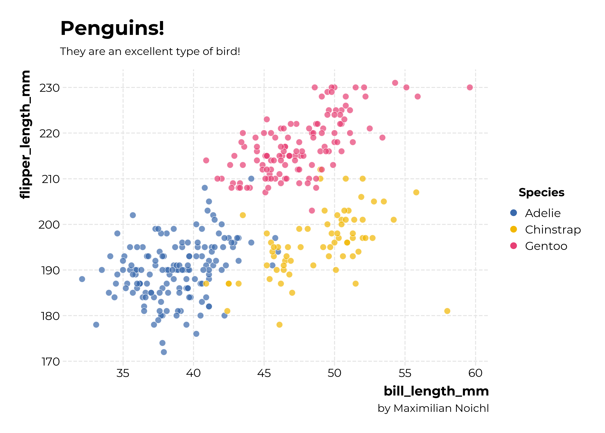
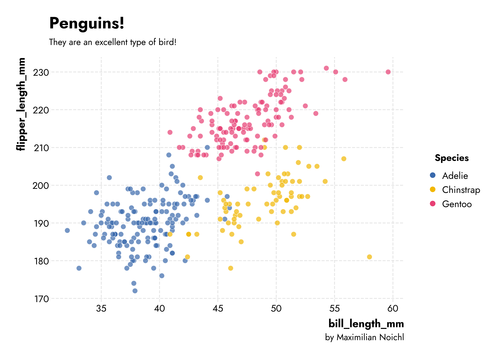
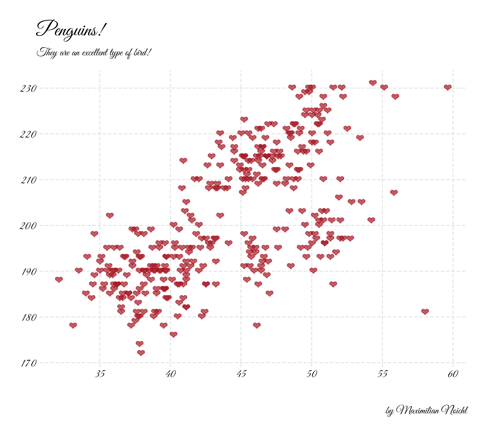

Last updated: 10 September 23Opinionated
Opinionated (Noichl 2023)

opinionated provides simple, clean stylesheets for plotting with matplotlib or seaborn.
It’s modeled and named after hrbrthemes in R, by Bob Rudis, which are “Opinionated, typographic-centric ggplot2 themes”. It’s not meant to be an exact clone though, I have made a few different choices. The python code takes a lot of inspiration from Dominik Haitz’s mplcyberpunk.
The main application I had in mind was to increase the quality of plots in Google-colab-environments, where there is a very small range of preinstalled fonts. The package therefore automatically downloads fonts from GoogleFonts. But I think everything should also work on your local machine. Be aware though, that it’s not super well-tested, and might e. g. fail with facets.
Installation
Usage
The package is very simple to use, you just import it and set the style you want:
import opinionated
import matplotlib.pyplot as plt
plt.style.use("opinionated_rc")
import colormaps as cmaps Note that opinionated automatically installs colormaps by Pratiman Patel, which provides an easy interface to some of the best colormap-collections in python, like cmocean, scientific or Cartocolors, among others. The usual matplotlib colormaps still work, of course!
Then you do your plotting:
f, ax = plt.subplots(figsize=(10, 7))
sns.scatterplot(x="bill_length_mm", y="flipper_length_mm", hue="species", data=penguins, alpha=.7, s= 70, palette=cmaps.bold[2:5]._colors)And finally, you can slap on some additional information, using some convenience functions with reasonable defaults. Of course, the usual ways of setting titles, legends, etc. still work.
opinionated.add_legend(title='Species')
opinionated.add_attribution('by Maximilian Noichl')
opinionated.set_title_and_suptitle('Penguins!','They are an excellent type of bird!')Here’s the result:

This certainly does look better than what the defaults would give you, right? –

Styles
The style opinionated_rc that we used above uses the font Roboto Condensed, which is my favorite from the original hrbrthemes-package. But there are other styles that you can use. Generally, I would advise using the narrower fonts for plots with more, and the wider ones for fonts with less text. Right now, out of the box we also have available:
opinionated_minimal which uses IBM Plex Sans (with some additional stylistic opinions):

opinionated_sg which uses Florian Karsten’s lovely space Space Grotesk font:

opinionated_fsc which uses Fira Sans Condensed:

opinionated_tw which uses Titillium Web font, another classic:

opinionated_m which uses Montserrat font, a relatively wide font to make bold points:

and
opinionated_j which uses Jost, a nice geometric font by indestructible type*:

Additional fonts
You can download whichever font you want from Google Fonts, using the code in the package. So nothing will keep you from doing something like:
from opinionated.core import download_googlefont
download_googlefont('Great Vibes', add_to_cache=True)
plt.rc('font', family='Great Vibes')
f, ax = plt.subplots(figsize=(10, 7))
plt.scatter(penguins["bill_length_mm"],penguins["flipper_length_mm"], marker="$\u2764$", s=100,c='#a81a26',alpha = 0.7)Which will result in something like the following:

Checking your installed fonts
If you want to get an overview of the installed fonts, you can run:
To-Do:
- Make it play nice with facets!
Citation
If you use this software in your work, feel free to cite it using the following metadata:
APA:
Noichl, M. (2023). Opinionated: Simple, Clean Stylesheets for Plotting with Matplotlib and Seaborn (Version 0.0.2.8) [Computer software]. https://doi.org/10.5281/zenodo.8329780BibTeX:
@software{Noichl_Opinionated_Simple_Clean_2023,
author = {Noichl, Maximilian},
doi = {10.5281/zenodo.8329780},
month = aug,
title = {{Opinionated: Simple, Clean Stylesheets for Plotting with Matplotlib and Seaborn}},
url = {https://github.com/MNoichl/opinionated},
version = {0.0.2.8},
year = {2023}
}Inspiration
Appendix

References
Noichl, Maximilian. 2023. “Opinionated: Simple, Clean Stylesheets for Plotting with Matplotlib and Seaborn.” https://doi.org/10.5281/zenodo.8329780.
Citation
BibTeX citation:
@online{foreman2023,
author = {Foreman, Sam},
title = {Opinionated},
date = {2023-09-10},
url = {https://saforem2.github.io/opinionated},
langid = {en}
}
For attribution, please cite this work as:
Foreman, Sam. 2023. “Opinionated.” September 10, 2023. https://saforem2.github.io/opinionated.